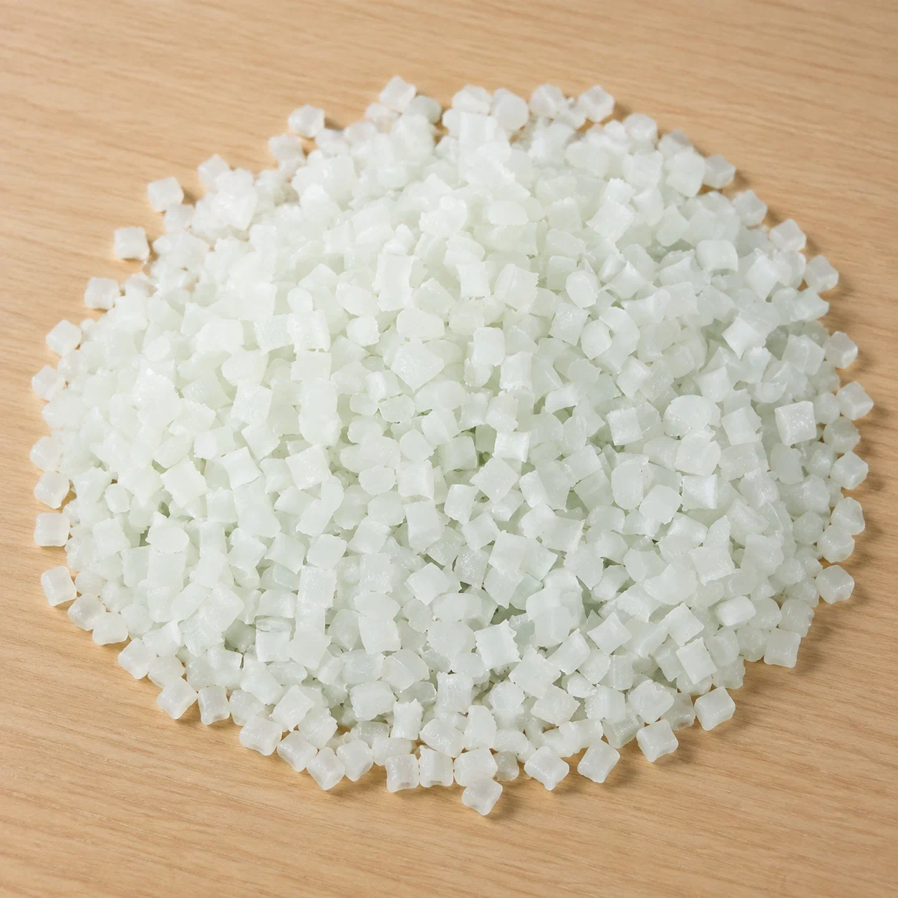
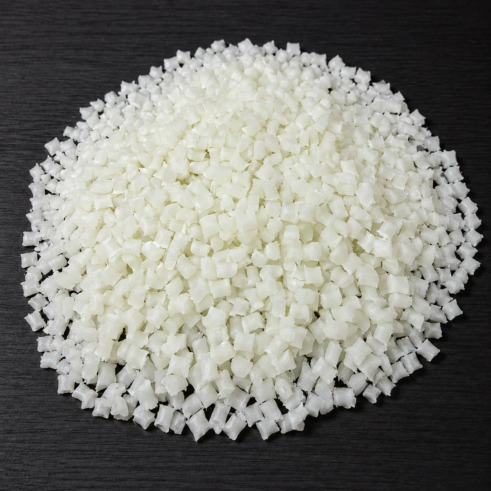
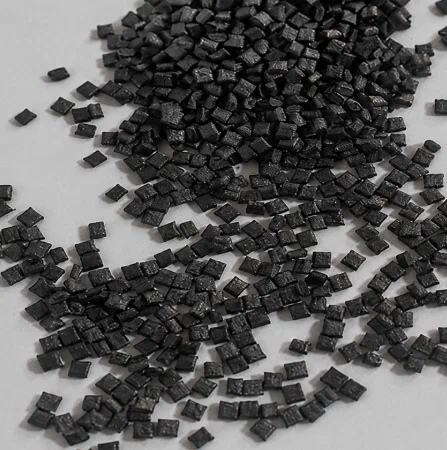

01 / THE MATERIAL以性能，定义形态
一颗原料。
更多可能。
强度、透明度、柔韧性、耐热性。选对材料，产品的边界就能向前一步。
02 / SELECTED MATERIALS三种材料 · 三种方向



04 / MATERIAL LIBRARY
探索材料组合。
精选 Techinherit 官网已发布的材料。点击材料可前往官网进一步了解。
图片来自 Techinherit 官网。具体牌号性能及适用性请与其团队确认。
为下一步，
找到合适的材料。
告诉我们产品需要实现什么，一起找到合适的选材起点。
联系团队 ↗